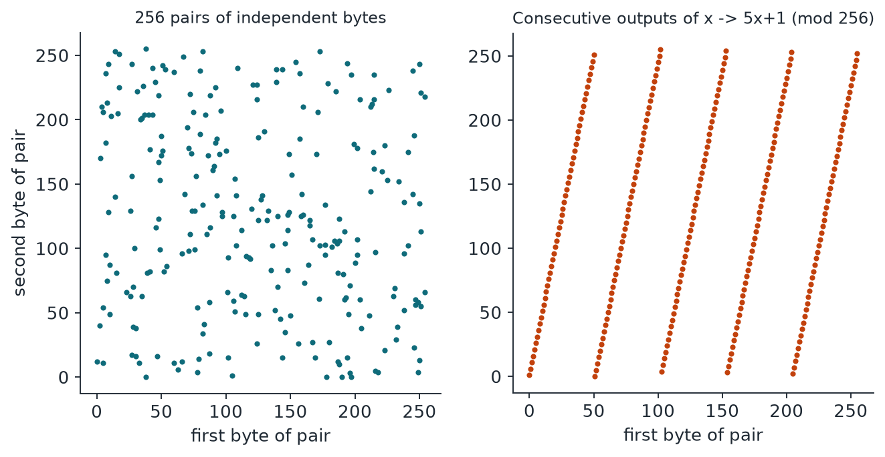

Chapter 12: Additional Tests (III): Spectral, Ordinal, Matrix and Betting Tests¶
These four tests need heavier mathematics to see structure that simple counts miss. The Weyl-sum test searches for the angles at which pairs of bytes line up like trees in an orchard; the ordinal-pattern test keeps only the order of five words; the random-matrix test uses the Tracy-Widom law to bound the strongest accidental correlation among 200 variables; and the universal betting test hires a clever gambler whose winnings are a valid statistical bound. Each has an exact or well-understood null distribution, which is what makes it worth studying.
12.1 Weyl-sum spectral test (test U1)¶
The idea in plain words. Plot each pair of bytes as a point on a 256 by 256 grid. Some generators' points fall in neat rows, like trees in an orchard: walk at the right angle and every tree lines up. A wild forest has no such angle. To find those angles, we turn each point into a small arrow whose direction depends on the point and the angle tested. In a wild forest the arrows roughly cancel, but at the orchard's angle they all point the same way and add up.
Example 12.1: Weyl-sum spectral test
Take 4 pairs on a line: (0, 0), (64, 64), (128, 128), (192, 192). At frequency \((u, v) = (1, 255)\), each arrow's angle depends on \(x - y\), which is 0 every time. So all four arrows align, \(F = 4\), and the normalised power is \(|F|^2/4 = 4\), for a single-frequency tail of \(e^{-4} = 0.018\). Four scattered pairs, (10, 200), (77, 3), (130, 91), (250, 45), give power 0.93 at the same frequency.
At full size, there are 32,769 frequencies to check, so the largest power from chance alone is expected to be about 11. A power of 15.0 is needed to fail at 0.01, and 17.9 to reach the verdict line. On one os.urandom sample the peak was 11.66, giving \(p = 0.246\).
The mathematics. Take \(m\) non-overlapping byte pairs \((x_j, y_j)\):
- \(x_j, y_j\): the two bytes of pair \(j\).
- \(i\): the imaginary unit, the square root of minus one. (It is not an index here.)
- \(u, v\): the frequency, with \((u, v) \ne (0, 0)\).
- \(F\): the sum of \(m\) independent unit arrows, each with mean 0 under the null.
- \(E\): the normalised power. On the 3 frequencies where \(F\) is purely real, namely \((128, 0)\), \((0, 128)\) and \((128, 128)\), its reference is \(\chi^2(1)\) instead.
- \(p_{\min}\): the smallest single-frequency tail, which is \(e^{-E}\) on all the other frequencies.
- \(K = 32{,}769\): the frequencies tested, taking one from each conjugate pair.
The final value is Sidak over \(K\). A peak on an axis (\(u = 0\) or \(v = 0\)) means uneven single-byte frequencies. A peak off the axes means joint structure, such as points lying in rows.
What it catches and misses. False alarms: 1 of 120, with p-values that look uniform. It flagged 16 of 59 (15 at the verdict line): 8 raw physical, 6 weak generators (MINSTD, MSVC rand() low byte, RANDU), the defective conditioner at \(p = 0.0011\), and parity. The peak location helps diagnosis. In our corpus only the MSVC rand() low byte has an off-axis peak, at \((5, 87)\) with power 933. MINSTD and RANDU peak on the axis at \((0, 1)\), showing uneven bytes, and the Numerical Recipes LCG is not significant here (\(p = 1\) for its words, \(p = 0.71\) for its top byte). It looks only at adjacent byte pairs, so structure that appears only among three or more values, or between bytes further apart, can pass. Generators with good 2-byte behaviour pass, such as MT19937.

12.2 Ordinal-pattern test (test U2)¶
The idea in plain words. Line up five people picked at random and note who is tallest, second tallest, and so on. Forget their actual heights; keep only the order. There are 120 possible orders, and for truly unrelated people all 120 are equally likely. A deterministic system can make some orders common and others impossible. Because we use only rank, a smooth bias in the values does not confuse the test.
Example 12.2: Ordinal-pattern test
Take the words 40, 10, 30, 50, 20. Sorting gives the positions 1, 4, 2, 0, 3, and the code turns these into a single class number between 0 and 119, here 44. For a toy version with 3 words per window (6 orderings) and 12 windows, suppose the counts are 5, 3, 2, 1, 1, 0. Each cell expects 2, so \(X^2 = (9 + 1 + 0 + 1 + 1 + 4)/2 = 8\) with 5 degrees of freedom, and \(p = 0.156\). The full test uses 5 words per window. At 1 MiB this gives 52,428 windows and about 437 per class.
The mathematics. Split the 32-bit words into non-overlapping windows of 5:
- \(\pi\): one of the \(5! = 120\) orderings, numbered with a Lehmer code (a standard way to give each ordering one whole number).
- \(O_\pi\): the number of windows with that ordering.
- \(w\): the number of windows.
For i.i.d. continuous data, every ordering has probability exactly \(1/120\), because the values are exchangeable. With 32-bit values, ties have a probability of about \(10^{-9}\) and are broken in a fixed way, which is negligible. The p-value is the upper tail of \(\chi^2(119)\).
What it catches and misses. False alarms: 1 of 120, with p-values that look uniform. It flagged 5 of 59, only the real CPU jitter samples (4) and parity. So it is narrow, but it adds an angle: it asks about dynamics, not values. Even strongly biased sources pass: RANDU got \(p = 0.13\) while failing many other tests, because rank alone does not reveal its faults. It looks only at the 32-bit word view, aligned to the start of the file, and at 5 words at a time. It says nothing about structure in the low bits of a word, since the order of two words is almost always decided by their top bits.
12.3 Random-matrix test (test U3)¶
The idea in plain words. Imagine 200 musicians, each playing their own random part for 2000 beats. Even with no coordination, there is a predictable limit to how loud the strongest accidental "shared tune" can be, and random-matrix theory gives that limit to high accuracy. If some musicians secretly follow the same score, a shared tune escapes above the limit. This test is sensitive to weak correlation spread across many variables at once.
Example 12.3: Random-matrix test
A tiny matrix is pointless here, because the theory is about large sizes. So we ran a toy with the real dimensions but plain simulated Gaussian numbers (not bytes). An eigenvalue measures how strong one shared pattern across the rows is, and the top eigenvalue is the strongest. For \(N = 200\), \(T = 2000\), the theory says the top eigenvalue centres on \(\mu = 1.7318\) with scale \(\sigma = 0.01334\). Our clean run gave \(\lambda_{\max} = 1.7471\), a score of 1.15 and a one-sided tail of 0.039. The bottom eigenvalue also sat in place (0.4714, against a centre of 0.4672). Bonferroni over the 2 edges gives \(p = 0.078\), a pass.
Then we made just 20 of the 200 rows share a hidden factor, with a correlation of 0.2 between them. Now \(\lambda_{\max} = 5.06\), a score of about 250, and \(p = 0\).
The mathematics. Each 16-bit word \(w\) becomes a Gaussian value \(z = \Phi^{-1}((w + \tfrac{1}{2})/65536)\). Stack them into a matrix \(Z\) that is \(N \times T\):
- \(N = 200\), \(T = 2000\): the rows and columns of \(Z\), using 800,000 bytes.
- \(\Phi^{-1}\): the inverse of the standard normal distribution function.
- \(Z^{\top}\): \(Z\) with rows and columns swapped (its transpose).
- \(S\): the sample covariance matrix, with eigenvalues from \(\lambda_{\min}\) to \(\lambda_{\max}\).
- \(\mu, \sigma\): the centring and scaling (Johnstone 2001), at the two Marchenko-Pastur edges (the theoretical top and bottom of the eigenvalue spread for pure noise).
- \(\mathrm{TW}_1\): the Tracy-Widom law for real matrices, using Chiani's gamma approximation, which is good to about \(10^{-3}\). Here \(\Gamma\) has a shape and a scale.
- \(p_{\text{hi}}, p_{\text{lo}}\): the upper Tracy-Widom tails at \(s_{\text{hi}}\) and \(s_{\text{lo}}\).
There are three approximations: the 16-bit rounding of the Gaussian, finite sizes, and Chiani's fit. Calibration is what confirms they do no harm.
What it catches and misses. False alarms: 0 of 120. It flagged 13 of 59: 8 raw physical, 4 weak generators (MINSTD and RANDU) and parity. It reads the data only as 16-bit words, and it finds correlation among the 200 rows of 2000 values, so structure at other lags or in other widths can be missed. Linear generators like MT19937 pass. One practical trap: below 800,000 bytes, the test is skipped and reported as \(p = 1\). That happened with our random.org sample (115,000 bytes), so its clean verdict does not include this test.
12.4 Universal betting test (test U4)¶
The idea in plain words. A gambler starts with 1 unit and bets on each bit at fair odds. If the coin really is fair, then no strategy has any edge. Her expected wealth stays at 1 forever, and the chance she ever reaches 100 units is at most 1%. So we hire a clever gambler who keeps track of what followed each recent pattern of bits. If she gets rich, the bits were not fair. Her winnings are the evidence, and the mathematics holds without any approximation.
Example 12.4: Universal betting test
Bits: 0101010101010101 (16 bits). A gambler who ignores history (order 0) sees equal counts, and her wealth ends at 0.196. She paid for learning and found nothing. A gambler who remembers one bit (order 1) bets on the first bit evenly, and then her wealth runs: 1, 1, 1, 1.5, 2.25, 3.75, 6.25, 10.94, 19.14, 34.45, 62.02, 113.70, 208.44, 387.11, 718.91, 1347.96.
In this toy we hire 3 gamblers (orders 0 to 2) and split the stake, so the wealth we credit is \(1347.96/3 = 449.3\). That gives \(p = 1/449.3 = 0.0022\). The real test splits among 23 gamblers, so it would credit only about 58.6 here, and on 16 bits it would not fail. It needs real length. To fail at 0.01 the credited wealth must reach 100, and to reach the verdict line, 1800.
The mathematics. For each order \(k\) from 0 to 22, use the Krichevsky-Trofimov estimator in each context:
- \(n\): the bits used, up to \(2^{23}\).
- context: the previous \(k\) bits. For order 0 there is one context.
- \(a, b\): the number of zeros and ones that followed that context.
- \(\Gamma\): the gamma function. This product is what betting \((b + \tfrac{1}{2})/(a + b + 1)\) on a 1 at each step comes to.
- \(2^{-k}\): the first \(k\) bits, each priced at one half.
- \(W_n\): the wealth of the mixture, a non-negative martingale with mean 1 under fair flips.
- \(W'\): the wealth the code actually computes, the best single order divided by 23.
The tail bound is Markov's inequality (and Ville's inequality, which extends the same bound to every moment along the way, not just the end). Because \(W'\) never exceeds \(W_n\), using \(W'\) is valid and slightly more cautious.
What it catches and misses. False alarms: 0 of 120 (every good sample gets \(p = 1\), which is expected for a bound this cautious). It flagged 13 of 59: 8 raw physical, 4 weak generators (MINSTD and RANDU), and parity. RANDU reached wealth of about \(2^{11544}\) at order 2. The gambler only knows about patterns of consecutive bits up to 22 long, so it misses relationships at longer distances. MT19937, for instance, passes.
We found and fixed a defect here while re-deriving the formula for the Java port. Our rolling context shifted the previous order's context, so the "order \(k\)" context was really one past bit repeated \(k\) times. The test stayed valid but was far weaker than described. After the fix, our records show an order-3 Markov source going from undetected to a wealth of \(2^{30079}\).
12.5 Summary¶
- Weyl sums turn each byte pair into a unit arrow; in a random stream the arrows cancel, and the normalised power of one frequency is approximately Exp(1). A peak on an axis means uneven single-byte frequencies; a peak off the axes means joint structure.
- With \(K=32{,}769\) frequencies the Sidak step is needed: a power of 15.0 is needed to fail at 0.01, and 17.9 to reach the verdict line.
- Ordinal patterns use only the order of 5 words, giving 120 equally likely orderings; the test is blind to size and to low bits.
- Random-matrix theory gives the Tracy-Widom distribution of the extreme eigenvalues of \(S=\frac1T ZZ^\top\); it needs at least 800,000 bytes and is sensitive to weak correlation spread over many variables.
- Universal betting: the wealth of a gambler betting at fair odds is a non-negative martingale with mean 1, so \(P(W_n\ge1/\alpha)\le\alpha\) holds exactly; to fail at 0.01 the credited wealth must reach 100.
12.6 Exercises¶
-
Four byte pairs (0,0), (64,64), (128,128), (192,192) lie on a line. At the frequency \((u,v)=(1,255)\), find \(F\), the normalised power \(E\) and the single-frequency tail probability.
Answer
Each arrow has angle proportional to \(x-y\), which is 0 for every pair, so all four arrows align and \(|F|=4\). The normalised power is \(|F|^2/4=4\) and the single-frequency tail is \(e^{-4}=0.018\). Four scattered pairs would give a power near 1 at the same frequency.
-
How many 5-word windows does a 1 MiB sample provide for the ordinal-pattern test, and how many windows are expected for each of the 120 orderings?
Answer
1 MiB is \(2^{20}\) bytes \(=262{,}144\) 32-bit words, giving \(\lfloor262144/5\rfloor=52{,}428\) windows. Each ordering is expected about \(52{,}428/120\approx437\) times.
-
For the random-matrix test with \(N=200\) and \(T=2000\), verify the centring \(\mu_{hi}=(\sqrt{T-1}+\sqrt N)^2/T\) and say why the test is skipped for samples below 800,000 bytes.
Answer
\(\sqrt{1999}=44.71\) and \(\sqrt{200}=14.14\), so \(\mu_{hi}=(58.85)^2/2000=1.7318\). The matrix needs \(N\times T=400{,}000\) 16-bit words, which is 800,000 bytes. Below that size the test cannot be built, so it is skipped and reported as \(p=1\).
-
In the universal betting test, why does a gambler who starts with 1 unit and bets at fair odds reach 100 units with probability at most 1%?
Answer
If the coin is fair, her wealth is a non-negative martingale with mean 1. By Markov's inequality (and Ville's inequality for the whole path), the probability that it ever reaches \(1/\alpha=100\) is at most \(\alpha=0.01\). The bound is exact mathematics, not an approximation.
-
Why does the Weyl-sum test need a Sidak correction over \(K=32{,}769\) frequencies?
Answer
It tests thousands of frequencies and keeps the largest power. Even for good data the largest of 32,769 powers is expected to be about 11, so a power that would be remarkable at one frequency is ordinary as a maximum. The Sidak step, \(1-(1-p_{\min})^K\), corrects for looking at all of them.